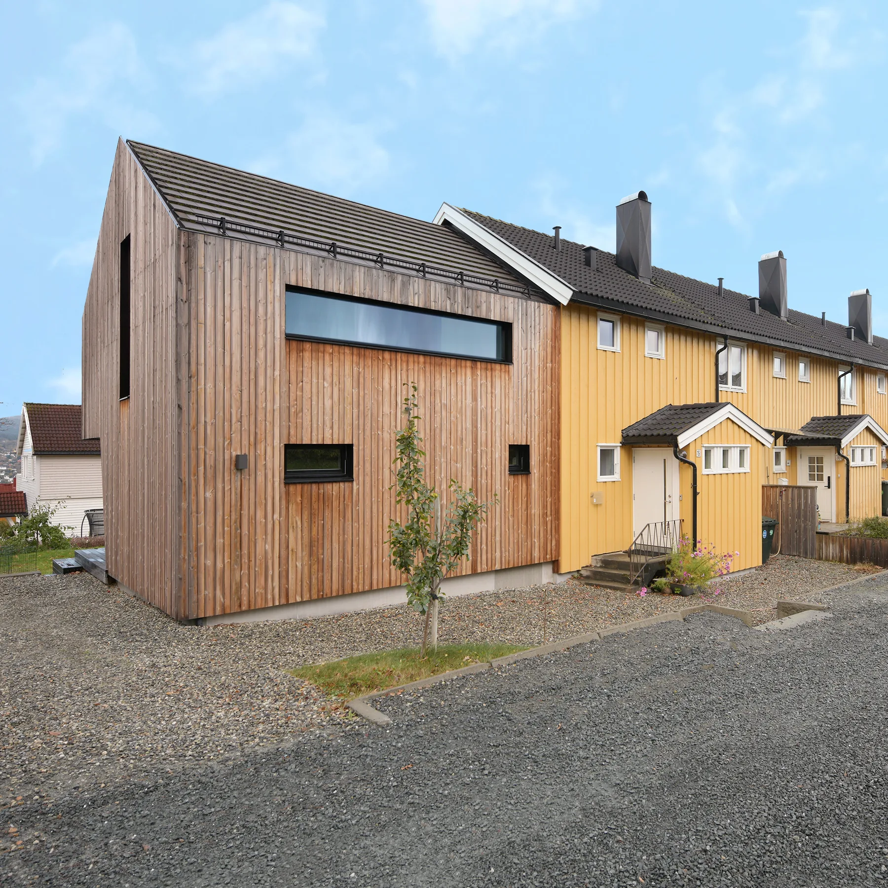
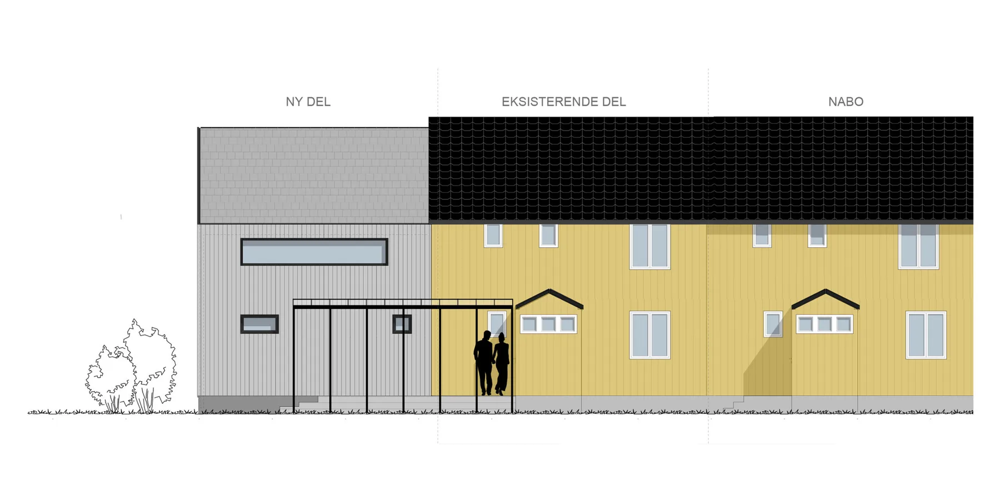
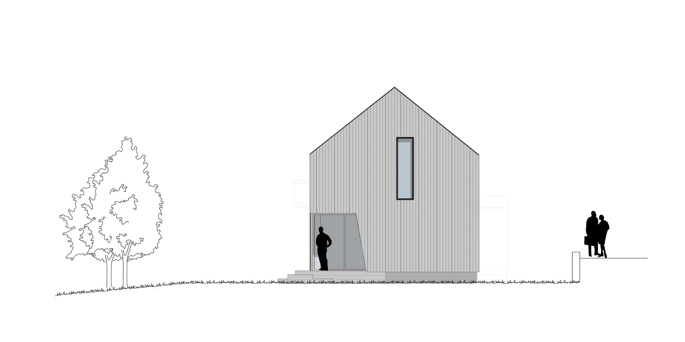
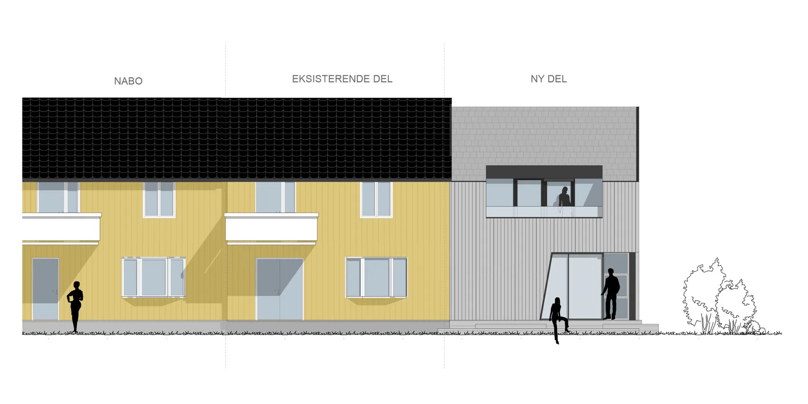
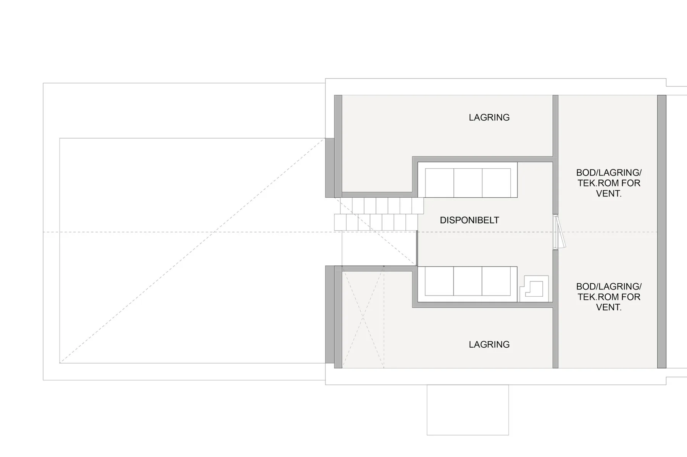
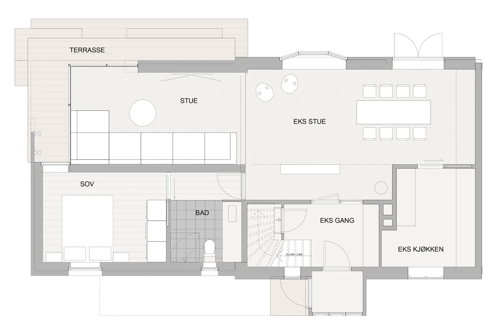
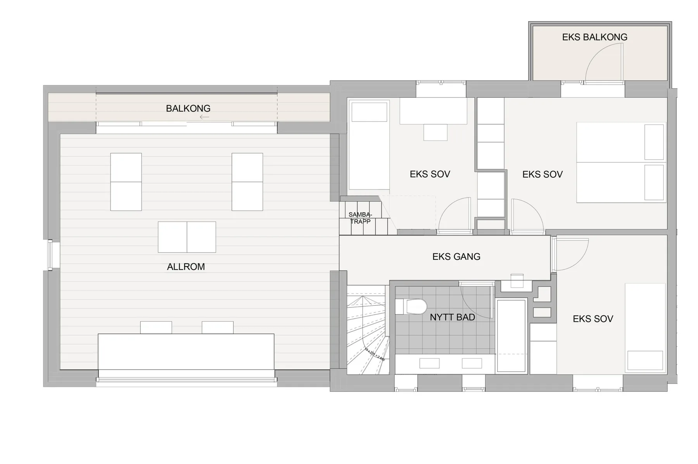

Konvallvegen 15
21Tilbygg til rekkehus
Bolig · fritid · NybyggSe bildegalleri

- Byggherre
- Juul / Juul Hatlevold
- Byggeår
- 2016
- Medarbeidere
- Marianne L. Sørstrøm
Om prosjektet
Et tilbygg viderefører rekkehuset med saltak og et mindre volum. Høyde og grunnflate er trukket tilbake slik at den opprinnelige bygningen fortsatt er tydelig, samtidig som boligen får nye rom.
Bilder & tegninger7 bilder



Forstørr

Forstørr

Forstørr

Forstørr

Forstørr

ForstørrLa oss begynne med en samtale